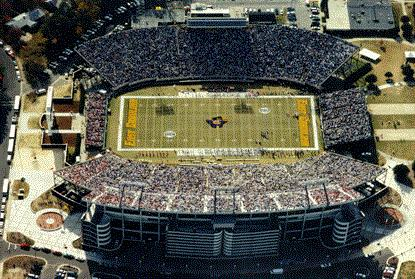

Research ResearchFamous Dowdys |
|
Members of Congress 1774 to Present: DOWDY, Charles Wayne, 1943- DOWDY, John Vernard, 1912- Entertainment Dowdy, Linda Cress - Creator and owner of "Barney",
the purple dinosaur for children. Literature Dowdey Jr., Clifford Shirley - famous author of many books
about Virginia history, Civil War era, and biographies. Famous
for his definitive biography on Robert E. Lee. He was born January
23, 1904 in Richmond Virginia to Clifford Shirley Dowdy Sr. Attended
Columbia University. Dowdey claimed in a brief bio for his Lee's
Last Campaign that he descended from mid-nineteenth century Irish
immigrant who descended from the ancient O'Dowda clan of County
Galway. This descent (at least the timing) is not true. His father
apparently descended from the Dowdy family of Cumberland County
Virginia originating there as early as the 1750s and who named
several males "Shirley" Dowdy over time. However, a
John B. Dowdey appears in Jefferson Ward of Richmond age 30 single,
born Ireland in the Henrico Co 1870 census.
Sports  Dowdy-Ficklen StadiumEast Carolina University, Greenville North Carolina In April, 1994, Ron & Mary Ellen Dowdy of Orlando announced a $1 million gift to the ECU Educational Foundation, which would also contribute to the stadium’s continuing renovations. Ron Dowdy, class of 1966, is a member of the Board of Trustees, who runs Dowdy Properties, a real estate company in the Orlando Area. He has also served on the Executive Committee of the Florida Citrus Sports Association, the Board of Directors for the Florida Citrus Bowl, etc.. For their gift, the stadium was renamed Dowdy-Ficklen Stadium that year. (Wikipedia)
Military Dowdy, Betsy - In December 1775, Eastern NC teenager Betsy Dowdy rode her horse 50 miles and warned General Skinner that the British were coming. Story also told in Wonder Woman comics in 1959 Academia Lewis Carnegie Dowdy - inaugurated on April 10, 1964 as the sixth president of North Carolina A&T University and reappointed chancellor in July 1972, thus making him the first chancellor of the university. A native of Eastover, South Carolina, Dr. Dowdy graduated cum laude from Allen University in Columbia, South Carolina, earned the master’s degree from Indiana State College and the doctorate of education degree from Indiana University. See Full Bio and Genealogy Did You Know... Dowdy, Oscar - mentioned in the recently published book about Hillary Clinton as a source for some controversial details. Listed as a "cousin" of the First Lady. |